These are the first 71 pictures for the book, drawn in style B with the new palette. Next to each one is the idea behind it. Tap a picture to see it full size.
What do you love? What feels wrong (a face, the tone, a detail)? Is anything missing, or does any picture not fit how you tell the story?
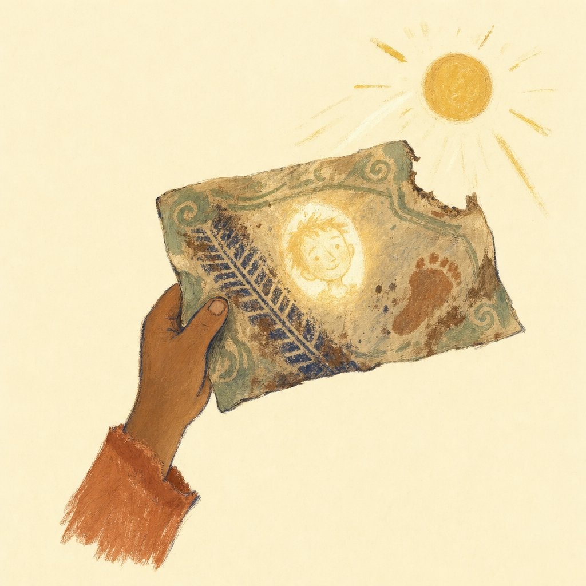
A child's hand holds a crumpled, muddy banknote up toward the bright sun. The note is dirty: a tyre track across it, a muddy footprint, a torn corner. But the sunlight shines through it, and in the note's clear oval window a softly glowing watermark appears: the gentle outline of a child's smiling face, clean and shining, untouched by all the mud. The note has only simple decorative swirls and borders: absolutely no numbers, letters, symbols or text of any currency. A few rays of light, lots of empty cream paper around it.
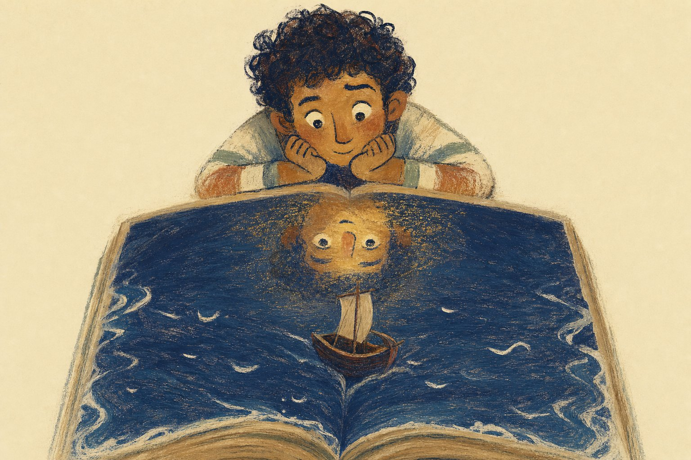
An open book lies on cream space. Its two pages don't hold writing: they have become water, a little patch of the Sea of Galilee lapping at the page edges, with a tiny fishing boat bobbing in the gutter of the book. A child (about nine, curious, chin on fists) leans over the top edge looking in. In the water we see the child's face reflected, lit with a small warm glow, as if they are already part of the scene. The image is mostly negative space, with the book bleeding off the bottom of the page. No text on the pages.
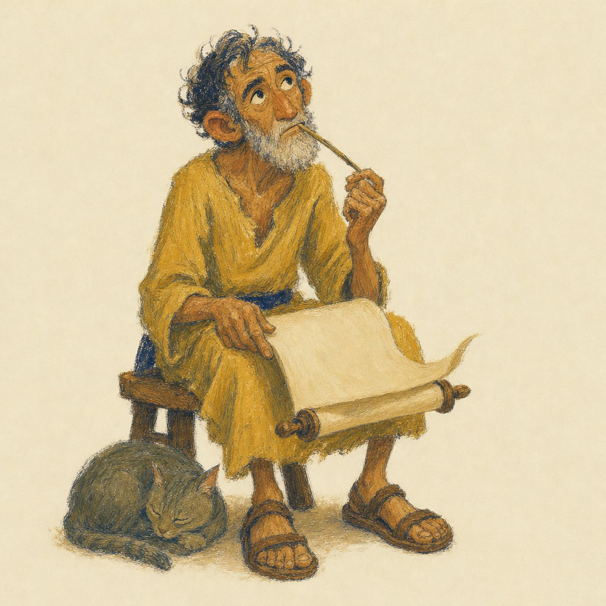
A small vignette of John as a very old man of about ninety. He still has the big ears and gangly frame of the young disciple, now with a wispy white beard and knobbly knuckles. He sits on a low stool with a reed pen in his mouth and a blank scroll on his knees, eyes rolled up thoughtfully. A breeze just beginning to lift the corner of the scroll hints that the words are about to come. A sleepy cat curls by his feet. A few confident lines and no background.
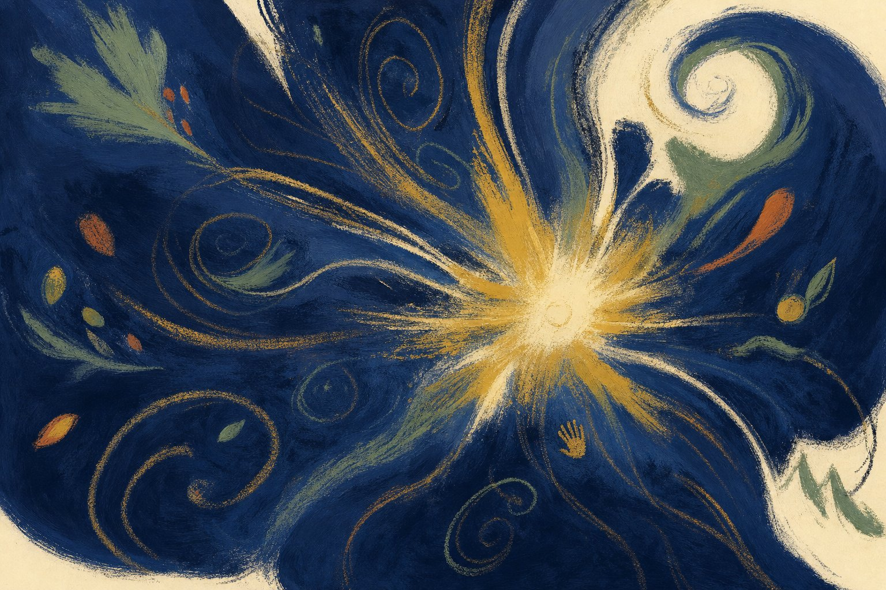
A bold, almost abstract image. A deep indigo field fills most of the page, broken by one point of warm mustard light slightly off-centre. From it, chunky brush-stroke rays and crayon spirals unfold outward like a voice spreading. The shapes at the edges begin to become things: a curl turns into a wave, a dot into a seed, a stroke into a bird's wing. Among them, hidden in the rays, is a tiny human handprint. No sun, stars or literal planets. Cream paper breaks through where the light is strongest, so the darkness feels thin rather than heavy.
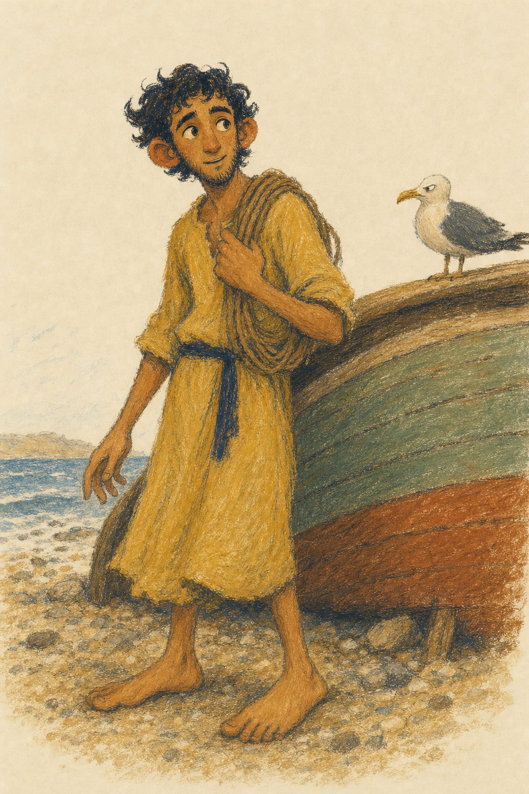
Young John, about eighteen, stands barefoot on a pebbly shore, half-turned toward us as if someone just called his name. He is all elbows and big ears, with feet too large for him and curly hair blown by the wind. A coil of fishing rope hangs over one shoulder. His face shows open, bright curiosity, with eyebrows lifted and the beginnings of a grin. Beside him lies an upturned boat with a gull perched on it, giving him a sideways look. The figure bleeds into cream space without a frame.
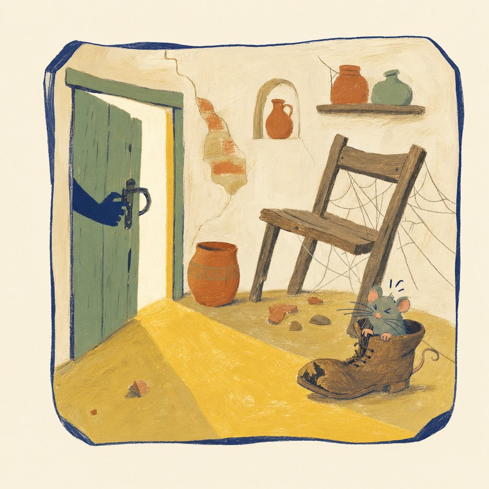
A small cutaway of a dusty room that has been dark for a hundred years. Cobwebs hang from a lopsided chair, and an old boot has a mouse living in it. A doorway has just opened, and a wedge of light floods in all at once. The mouse sits up blinking, startled. Every shadow has vanished in the same instant; no darkness lingers in the corners. The figure in the doorway is shown only as a silhouette hand on the latch.
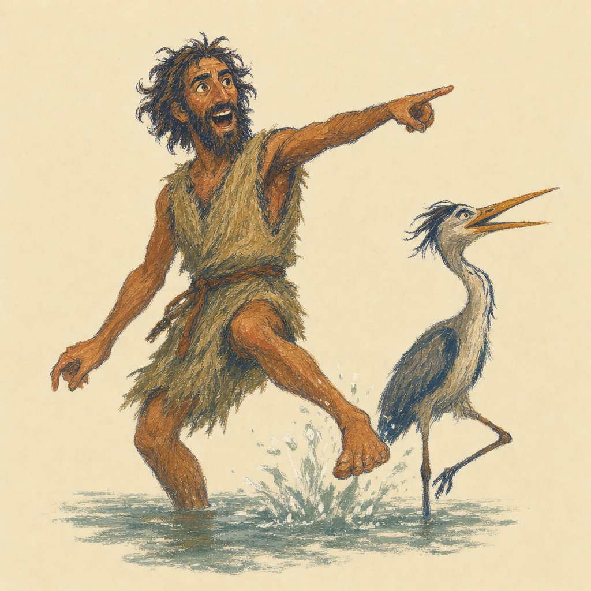
John the Baptist stands knee-deep in a river, wiry and sunburnt, with wild hair and beard going in every direction. He is beaming with delight, eyes sparkling, laughing as he points: his whole body is a pointing arrow, arm flung out, finger stretched, one leg kicking up a happy splash, like someone who can't wait for you to meet his very best friend. Wild-looking but kind and warm, not stern or shouting. Whoever he points at is off the page to the right, so the reader's eye follows him out of the picture. A heron beside him copies the pose with its beak. Only a few strokes of water.
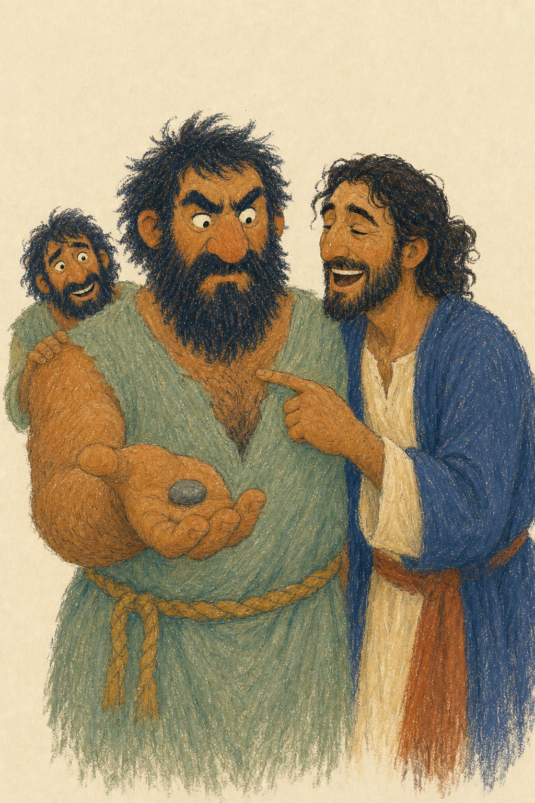
Peter, big and burly with a wild beard and round nose, stands holding a smooth pebble in his huge rough palm and staring at it suspiciously, as if it might bite. Jesus beside him is mid-laugh, tapping Peter's broad chest with one finger: 'You. Rock.' Peter's eyebrows wrestle between pride and confusion. Behind them, Andrew peeks around with a nervous grin. The focus is on the two faces and the tiny stone; the background is almost empty.
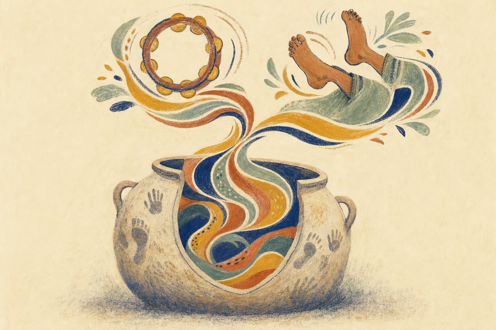
A graphic, symbolic composition. A single big stone washing jar is drawn as a simple chunky shape, sliced open like a diagram. Its outside surface shows a few dusty footprints and handprints, the old outside washing. From deep inside, a swirl of rich colour wells up and curls out of the brim in a ribbon. Above the jar the ribbon loops into dancing shapes: a tambourine and a pair of kicking feet. Lots of cream space, and the jar sits low on the page.
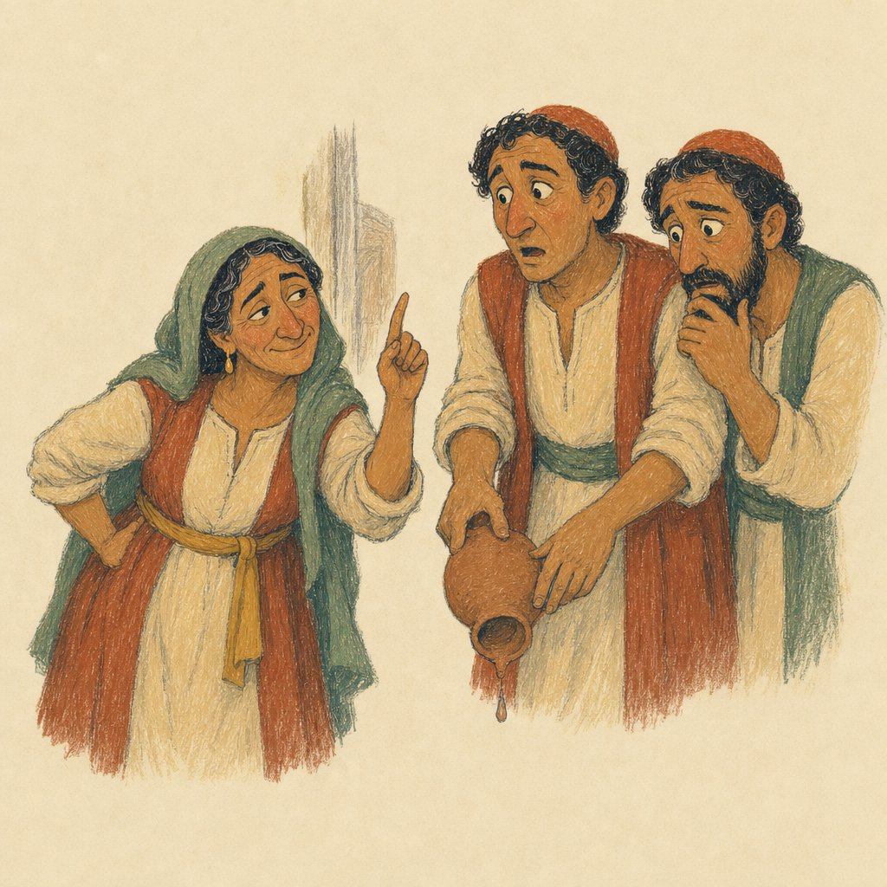
Mary, short and sturdy with sleeves pushed up, leans in toward two flustered waiters. One clutches an empty wine jug upside down, with a single drip falling out. She has one finger raised and a knowing, slightly conspiratorial smile, nodding her head toward someone off to the side. The waiters' faces show panic melting into hope. A few lines suggest a doorway and nothing else.
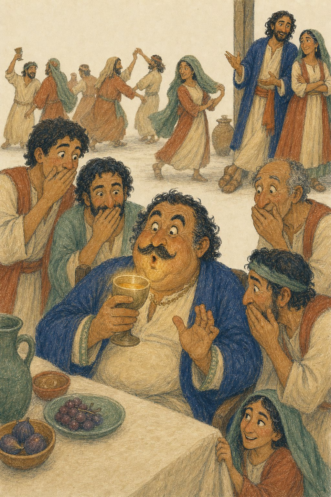
Show the miracle through astonishment, not through Jesus beside jars. The master of the feast, a round-bellied man with a pompous moustache, has just sipped. His eyebrows shoot up, his cheeks puff and his eyes cross with delight. The wine in his cup glows with a warm mustard-gold light. Around him, the servants who filled the jars with water huddle with hands over their mouths, trying not to burst out laughing. A girl peeks out from under a table. Wedding guests dance in the background. Far off at the edge, Jesus leans against a doorpost chatting, and Mary gives Him a sideways look.
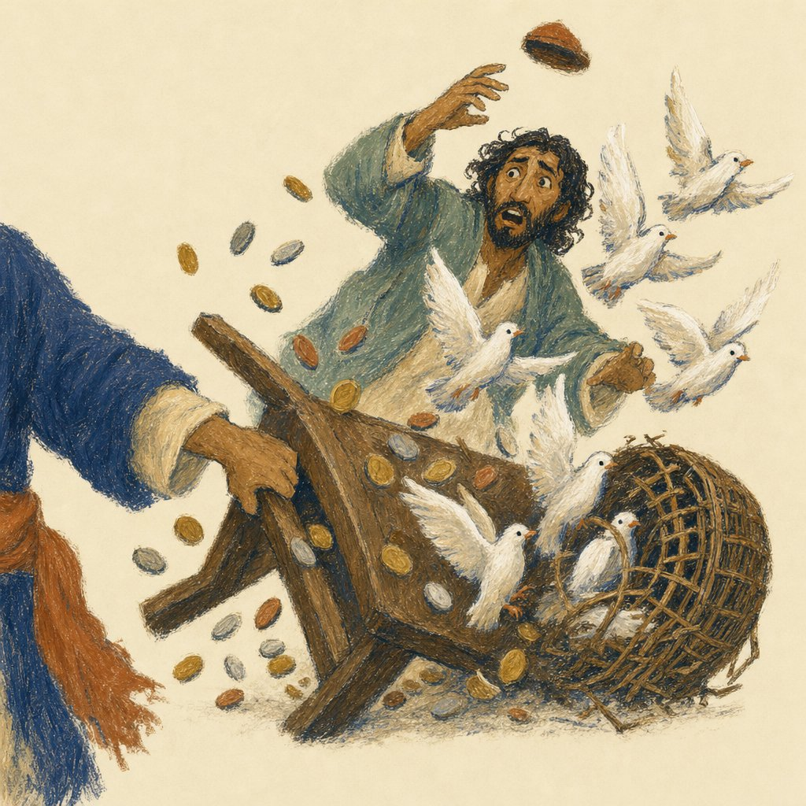
A tumbling moment caught mid-air. A table is flipping over, coins scatter like hail, and a wicker cage has burst open. The focus is on the little doves bursting out and flapping upward toward open sky. A startled dove-seller grabs at his hat as it flies off. Only Jesus' arm and sash are visible at the edge, with a strong hand that has just flipped the table. His feeling is fierce and sad, not cruel.
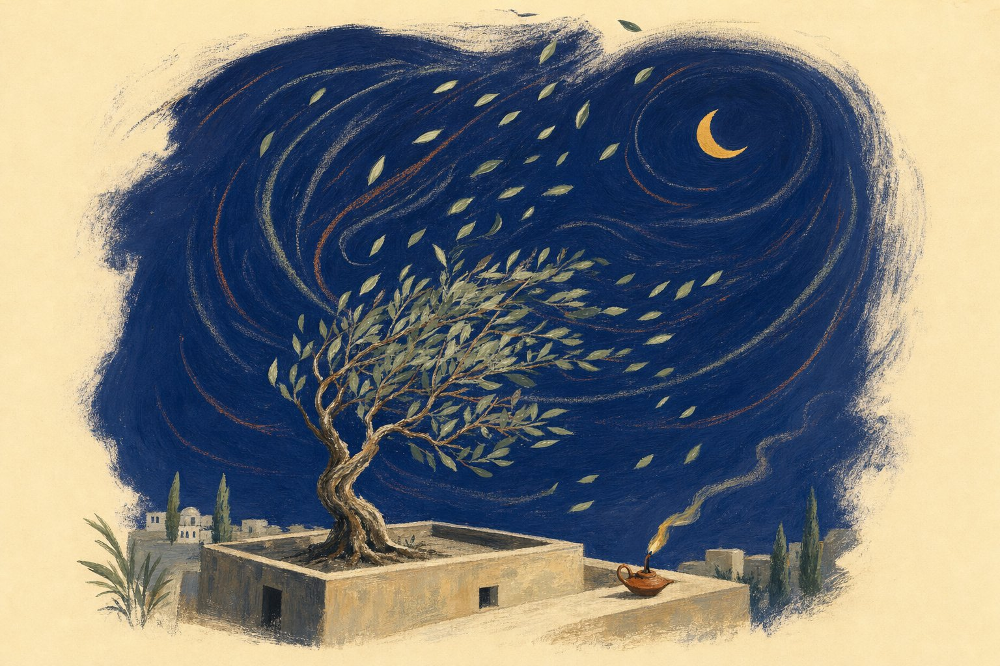
A night scene made almost entirely of movement. A single olive tree on a flat rooftop bends as unseen wind pours through it, shown as long sweeping crayon lines curling upward. Leaves rise off the branches and spiral up into a deep indigo sky toward a small crescent moon. Tiny at the bottom, a lamp burns on the roof ledge, and its flame leans with the wind. No people. The motion drives the eye from bottom to top: from above, upward.
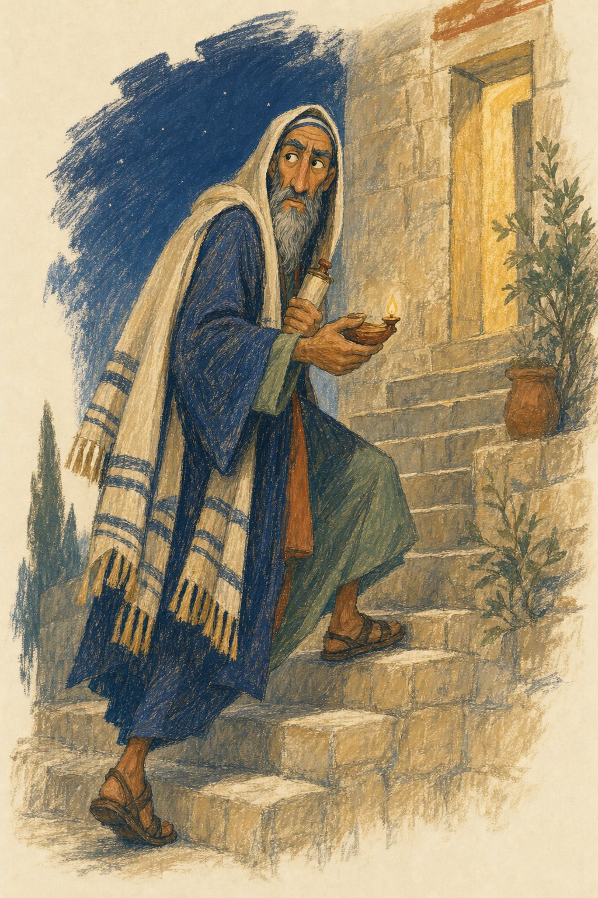
Nicodemus is halfway up an outside staircase at night. He is tall and thin, with fine tasselled robes gathered in one hand and a scroll clutched to his chest. He glances back over his shoulder with bushy eyebrows knotted, half careful and half sheepish. His long grey beard catches the light of a small oil lamp he holds out in front of him. At the top of the stairs a warm doorway glows faintly. He is a serious, learned man full of questions, not a villain.
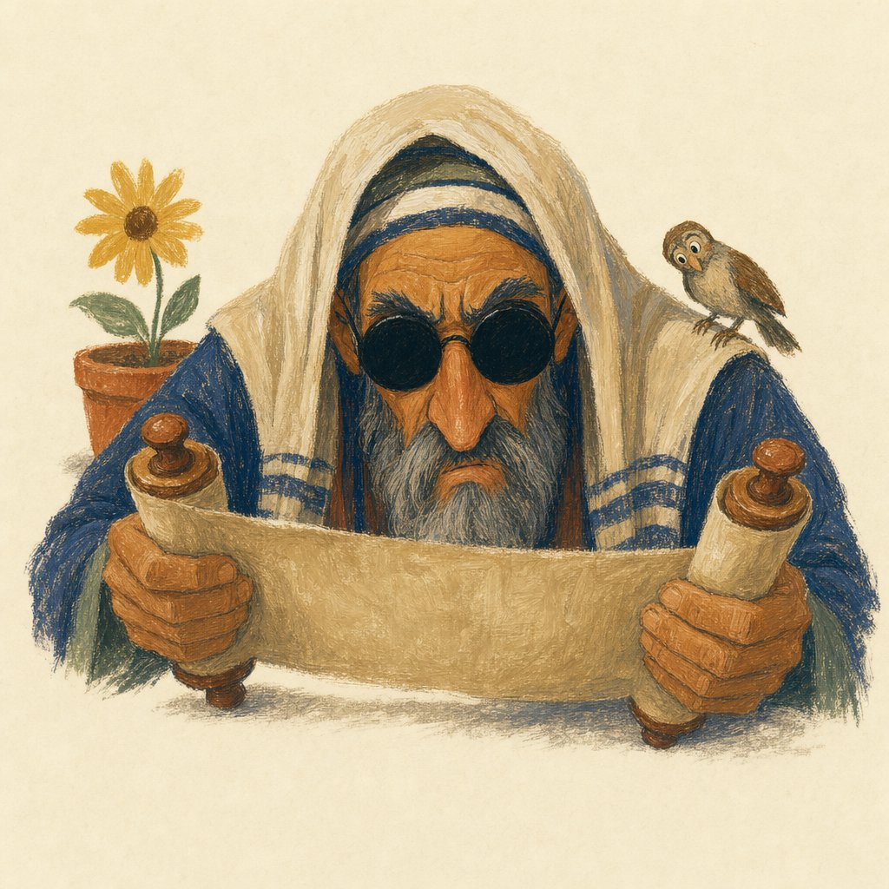
A funny close-up of Nicodemus wearing a pair of enormous, completely black round sunglasses pushed firmly up against his face, so dark that his eyes cannot be seen at all: the lenses are solid black discs. He leans forward and frowns, nose almost touching a single open scroll he holds flat in front of him with both hands (one simple sheet unrolled sideways between two wooden rods), straining and failing to read it. Behind him the world is perfectly bright, with a sunny flower in a pot, but he can't see it. A tiny bird sits on his shoulder, peering at the black glasses with a puzzled head tilt.
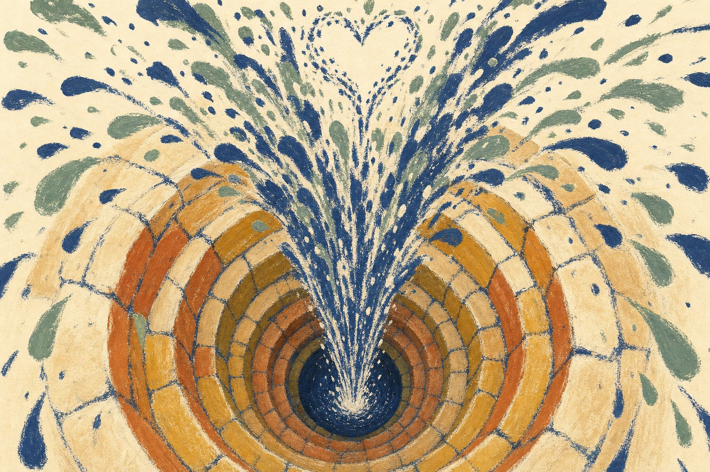
A looking-down view into a deep well, drawn as concentric rings of stone narrowing toward a dark circle of water far below. From the very centre, water is no longer sitting still: it is leaping up in a tall, joyful fountain. The fountain bursts out over the rim and spills off the edges of the page. In the spray at the top, the droplets form the faint outline of a heart. Strong geometry with loose, splashy brushwork.
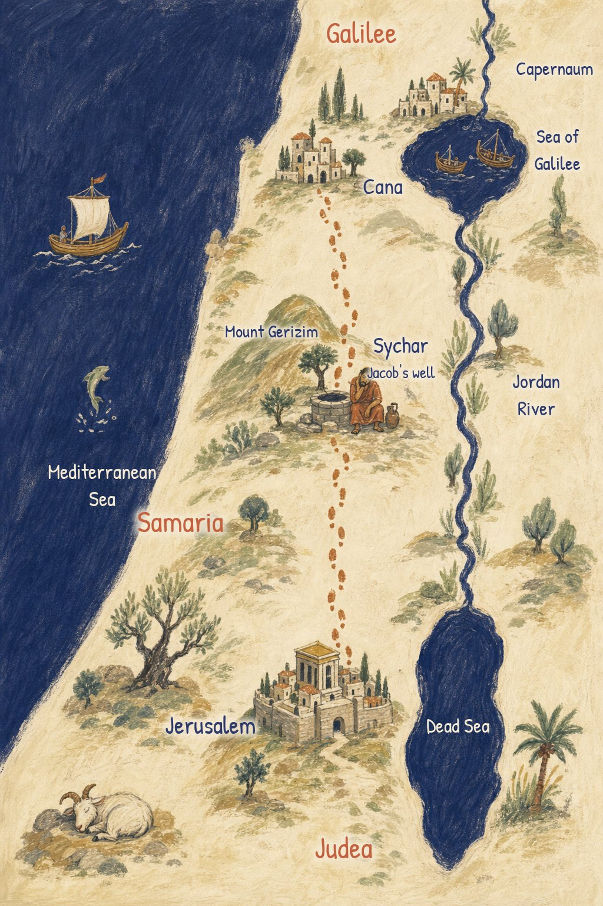
A hand-drawn pictorial map of the land in Jesus' day, like an explorer's sketch, not a textbook. The Mediterranean Sea on the left with a little boat and a leaping fish. At the bottom dot, Jerusalem as a tiny walled hill-city with the temple. At the middle dot, Sychar: a small stone well beside a rounded holy mountain, with a tiny figure resting at the well. At the top, the lake (Sea of Galilee) with two little fishing boats; tiny villages at the dots for Cana and Nazareth west of the lake and Capernaum on its shore. The Jordan River is a wiggly ribbon running from the lake down to the Dead Sea. A dotted trail of small sandal footprints follows the path from Jerusalem north through Sychar to Cana. Little drawn details: a lone palm by the Dead Sea, a sleeping goat, olive trees, hills. No text at all.
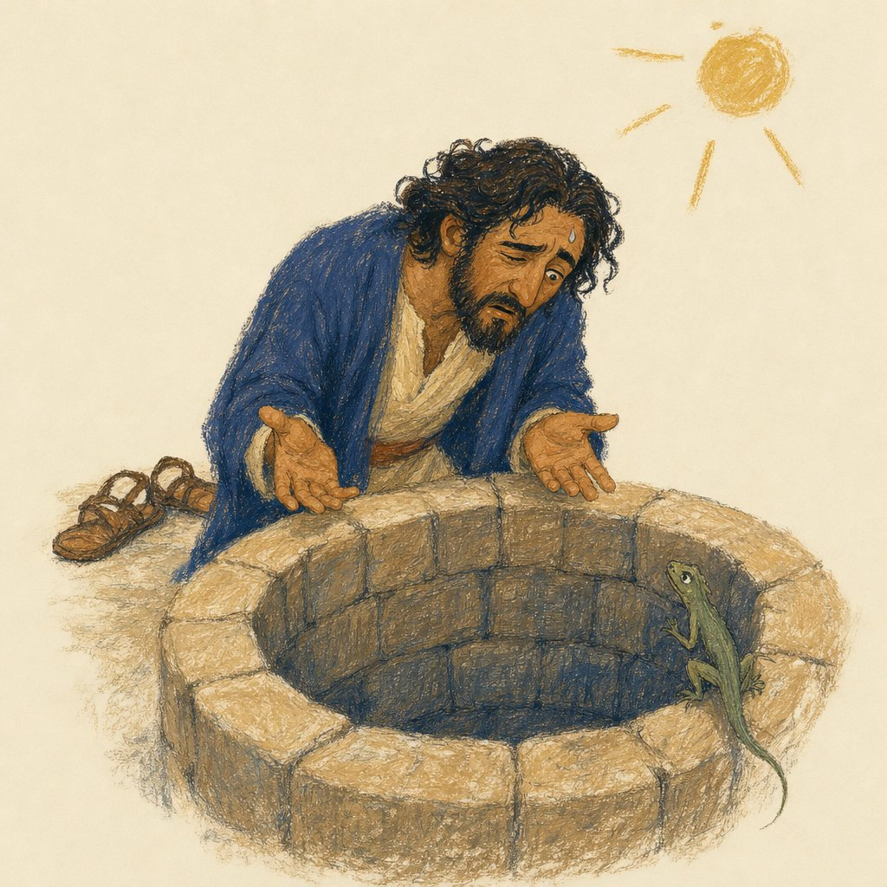
Jesus, dusty and tired, leans over the rim of a deep well, peering down with one eye closed and a comically hopeless expression. His empty hands are turned up, and a drop of sweat sits on his forehead. His sandals are kicked off beside him. A lizard on the well wall looks at Him as if to say 'Good luck.' Hot sun is suggested with a few strokes.
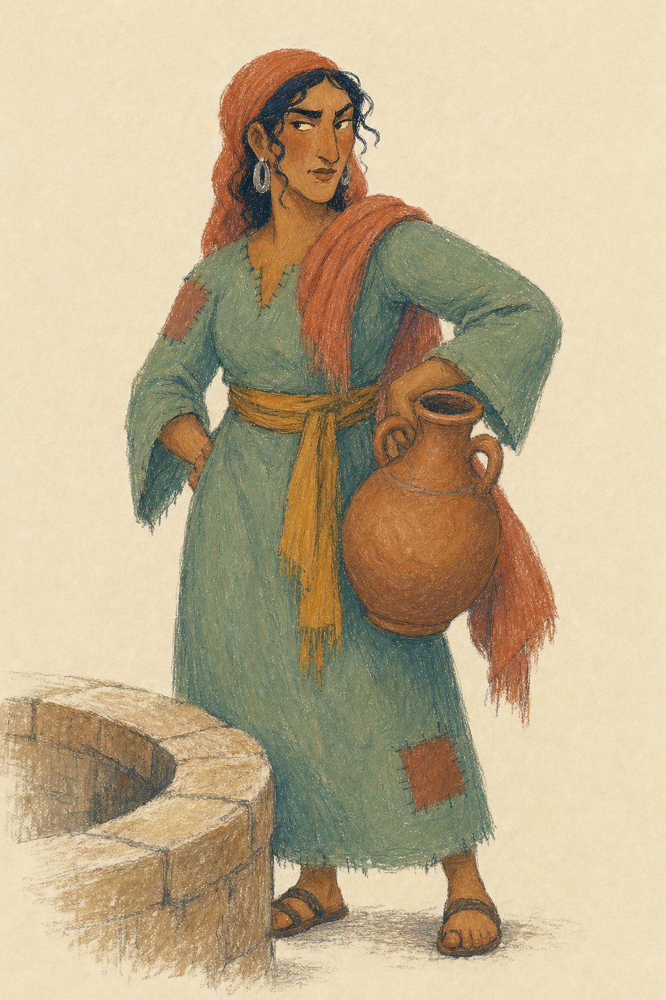
The Samaritan woman stands tall and broad-shouldered with a big clay jar on her hip. Her terracotta scarf is slipping and her silver earrings catch the noon sun. One bold eyebrow is raised high and her lips are pressed in a sceptical half-smile. Her body is turned slightly away but her eyes stay fixed on someone in front of her. She is sharp, quick and nobody's fool. The figure is set on cream space with only the curve of the well's rim at her feet.
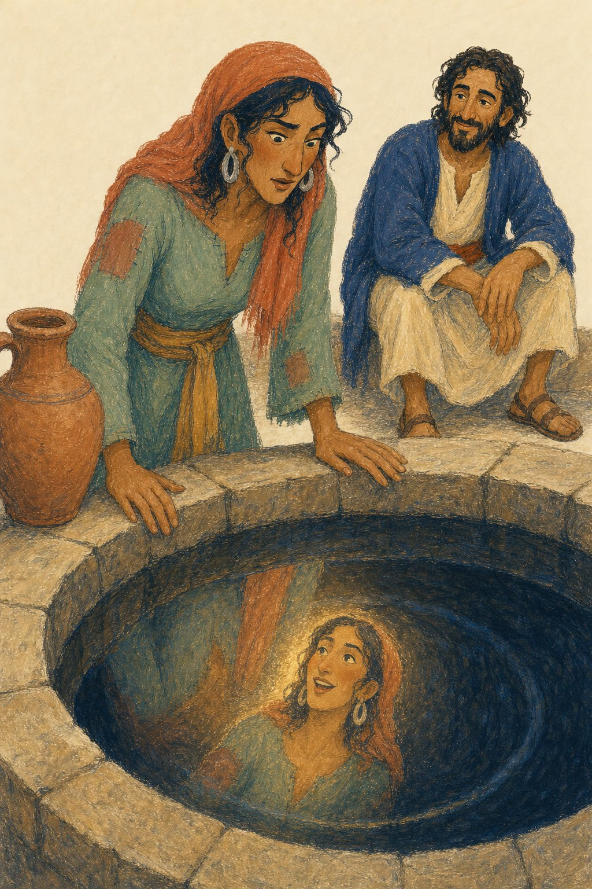
An intimate two-person moment at the old stone well at noon. The Samaritan woman stands at the well with her water jar set down at her feet, forgotten. She has just realised that this stranger knows everything about her and is not leaving: her guarded, sharp face is cracking open into astonished, almost tearful joy, one hand rising to her chest. Jesus sits on the well's rim, leaning toward her with his elbows on his knees, looking up into her face with warm, steady, unhurried eyes and the beginning of a smile. A soft mustard-gold glow rises from the water in her jar, as if it has been waiting for her. Bleached cream space for the noon heat; no other people, no reflections.
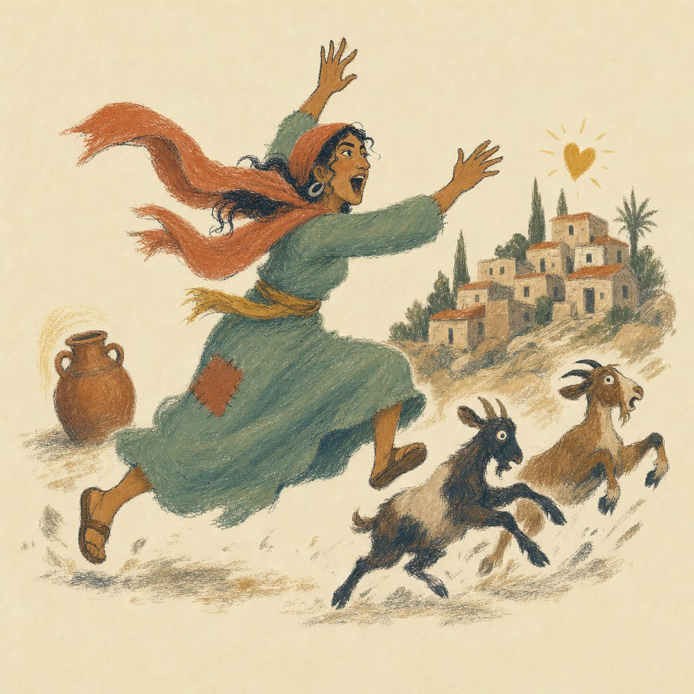
The woman runs flat out toward a cluster of village rooftops. Her skirt flies, her scarf is streaming behind her and her arms wave over her head, mouth wide open shouting. Behind her, left forgotten by the well, sits her big clay jar, with a small glow resting on it. Two village goats scatter in surprise.
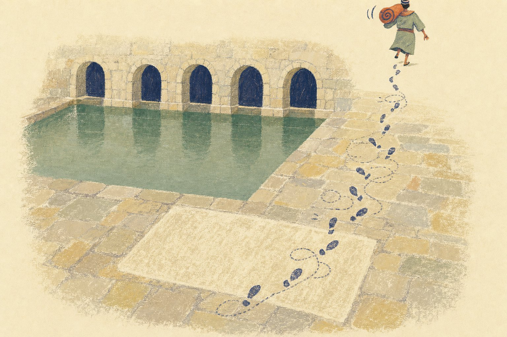
A playful symbolic opener viewed from slightly above. Stone paving surrounds the edge of a pool with five arches suggested in a row. On the stones is a pale rectangular mark where a sleeping mat lay for thirty-eight years, worn into the ground. From that empty spot, a trail of footprints dances away: skipping, hopping, twirling. Far up the page the footprints lead to a rolled-up mat bouncing on a man's shoulder, just leaving the frame. The water is perfectly still; it was not the stirring water that did it.
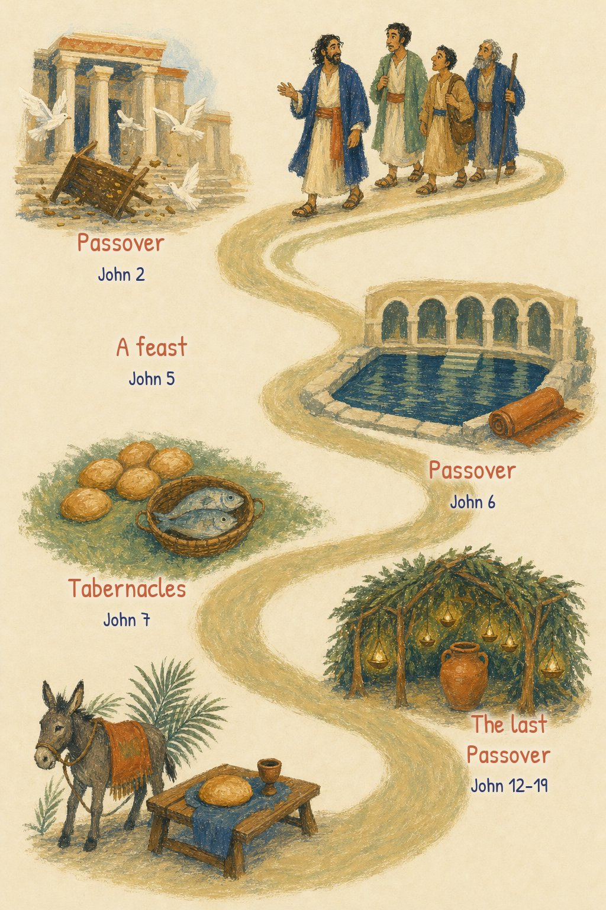
A pictorial timeline of the festivals in John's Gospel: one long winding road that starts at the top of the page and snakes down to the bottom, with five stops along it, alternating left and right, each a small symbolic vignette beside the road. Stop 1 (top): the temple with an overturned table and doves flying free. Stop 2: a pool with five arches and a rolled-up sleeping mat. Stop 3: a grassy hill with five little loaves and two fish in a basket. Stop 4: a small leafy booth made of branches with a big water jar and glowing lamps. Stop 5 (bottom): a donkey with palm branches and, next to it, a low table with bread and a cup. A tiny Jesus with a few friends walks the road near the top. Leave a clear patch of plain paper on the opposite side of the road from each vignette. No text, numbers or letters.
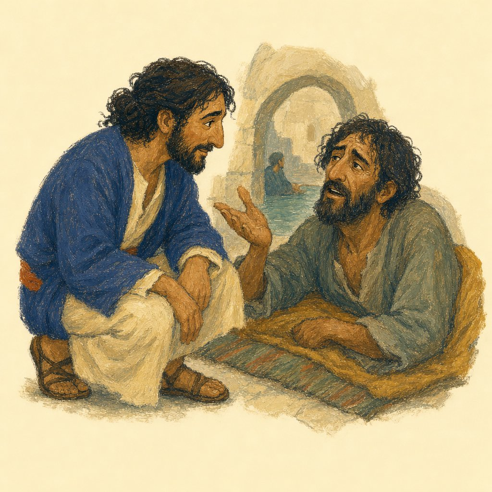
A tender close-up. Jesus crouches low beside a thin, grizzled man lying on a worn mat under an arch, bringing His face down to the man's level. Jesus' head is tilted and His eyes are listening. The man has propped himself on one elbow, mid-complaint, one hand gesturing toward the pool where someone else always gets in first. His face is weary and a little grumpy, but beginning to wonder.
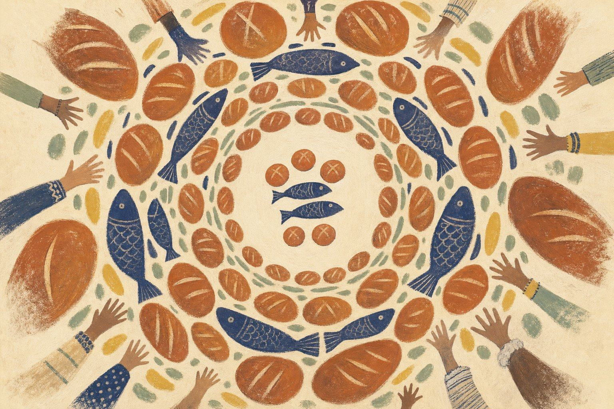
A geometric, almost mandala-like composition. At the centre sits a small cluster of five little buns and two fish. Around it, ring after ring of loaves and fish radiate outward like ripples in a pond, multiplying and getting bigger. In the outermost ring the loaves tumble off the edges of the page, as if there is too much to fit. In the gaps between rings, tiny hands reach in from the edges. Strong pattern with handmade wobble.
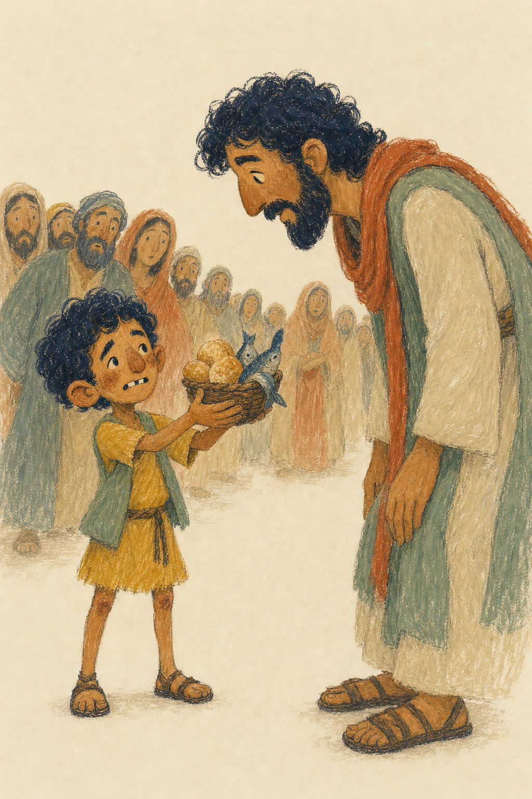
The small boy stands holding his little basket up with both arms toward a very tall disciple who is bending down. He has scabby knees, sticking-out ears and a gap-toothed face. His expression is the heart of it: a mix of reluctance and brave generosity, his mouth wobbling, eyes looking at the five tiny buns his mum baked. One fish tail flops over the basket rim. Behind him, the edge of the huge crowd is suggested in a few marks.
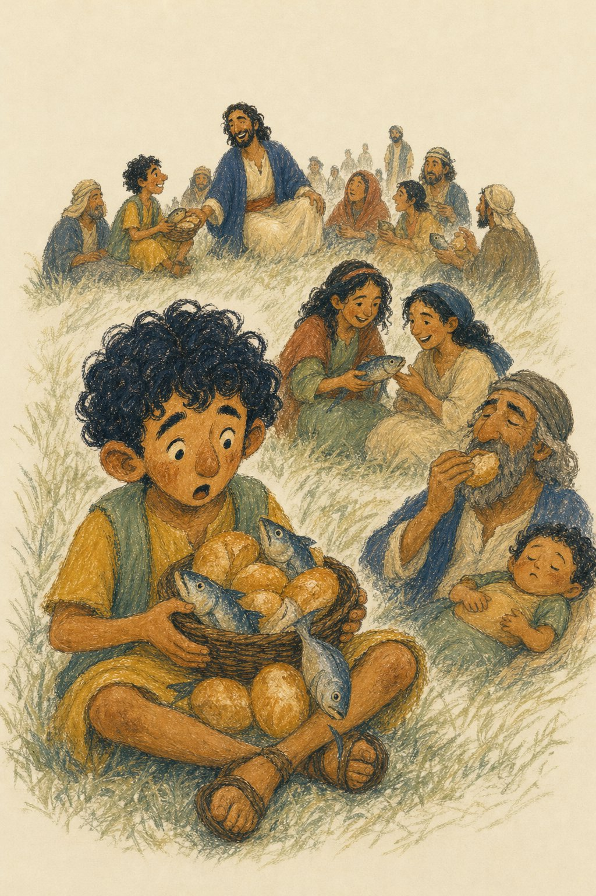
Close in on the boy with the lunch in the foreground, sitting in the grass and gaping in disbelief at his little basket, which is overflowing with bread and fish spilling onto his lap. Just behind him, a few families on the grassy hillside are eating happily: an old man with cheeks stuffed full of bread, two girls laughing as they share a fish, a baby asleep on a full belly. Further back, Jesus sits among a group, passing bread and laughing. The crowd fades softly into the cream page. No rows or lines of baskets.
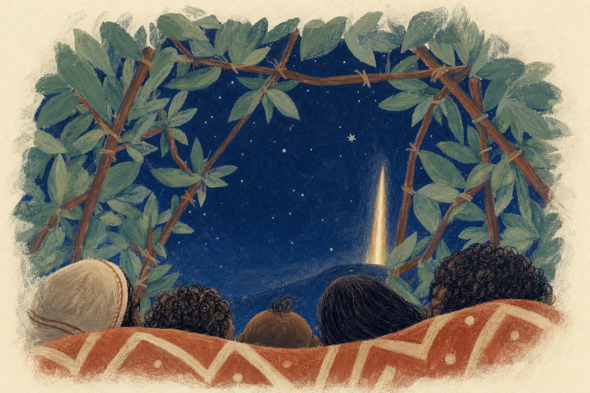
A view from inside a little booth made of leafy branches, looking straight up through its roof. Between the leaves, gaps open onto a deep night sky, with a single tall pillar of flame-shaped light standing far off on the horizon, drawn as a soft vertical stroke. At the bottom edge, the tops of a sleeping family's heads and a cosy blanket peek in. Leaves frame everything in chunky shapes.
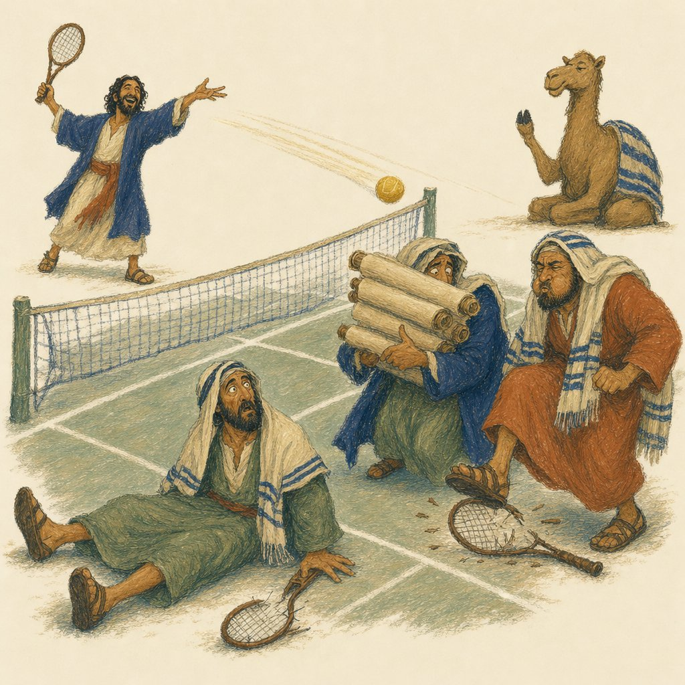
A comic sketch of a tennis court in a dusty courtyard with a sagging net. On one side, Jesus serves an easy, relaxed ace, laughing, and the ball whizzes past. On the other side, three robed religious leaders tangle themselves trying to return it. One is stamping on his broken racket, one is buried in a stack of heavy scrolls he's using as a racket, and one has sat down hard on the ground, legs sticking straight out in front of him, dazed, racket still in hand. A camel watches from the side like a line judge. Keep it affectionate, not mocking of Jewish people.
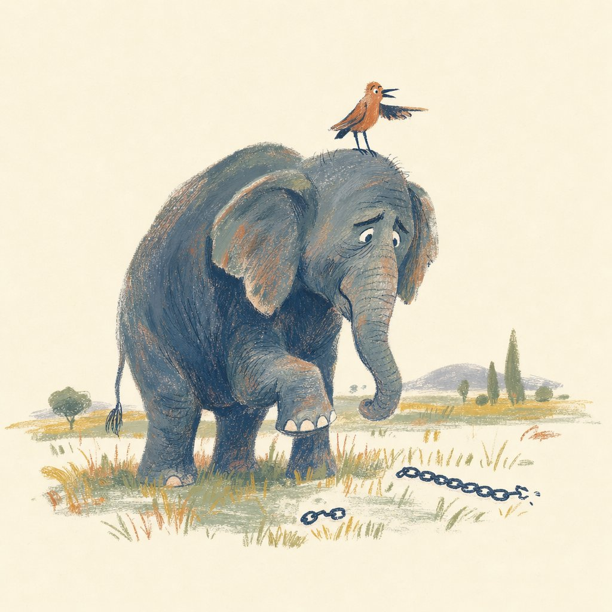
A big, wrinkled elephant stands perfectly still in an open field, one foot raised a tiny bit, looking down at it with a worried, uncertain face. The chain that once held it lies loose and broken in the grass, attached to nothing. The whole wide meadow stretches out behind it, empty and free. A small bird sits on its head, impatiently pointing a wing toward the horizon.
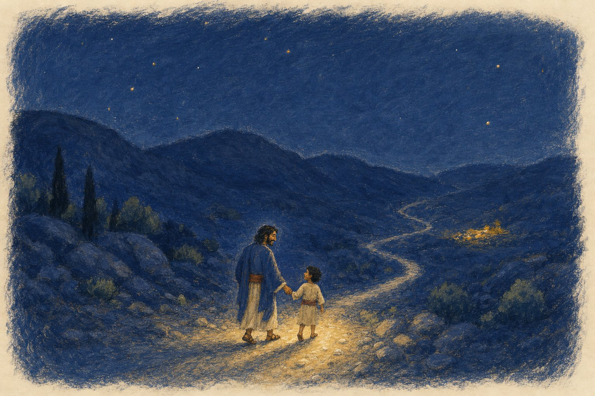
A night landscape almost entirely deep indigo, with rolling hills and a twisty path. Along the path walk two small figures: a child holding hands with Jesus. The light does not come from a lantern held high but from the space around them, a warm pool spreading on the path just ahead of their feet. Every pebble ahead is visible and the dark hills behind them have nowhere to hide. The two figures are tiny, with big negative-space sky.
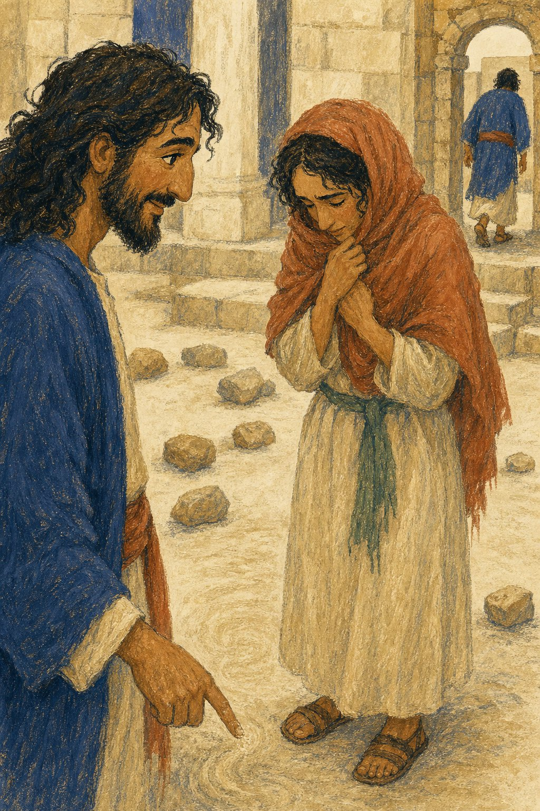
An empty temple courtyard. Stones lie dropped on the ground in a loose ring, and the last man's back disappears through an archway. In the middle, a woman stands with her shoulders hunched, scarf clutched, braced for the worst. Jesus, dust still on His fingertip from writing on the ground, has risen and looks at her with deep kindness, His head tilted and a small smile. In the dark of His eyes we can just see her tiny reflection standing straight. The dust shows only swirls, no letters.
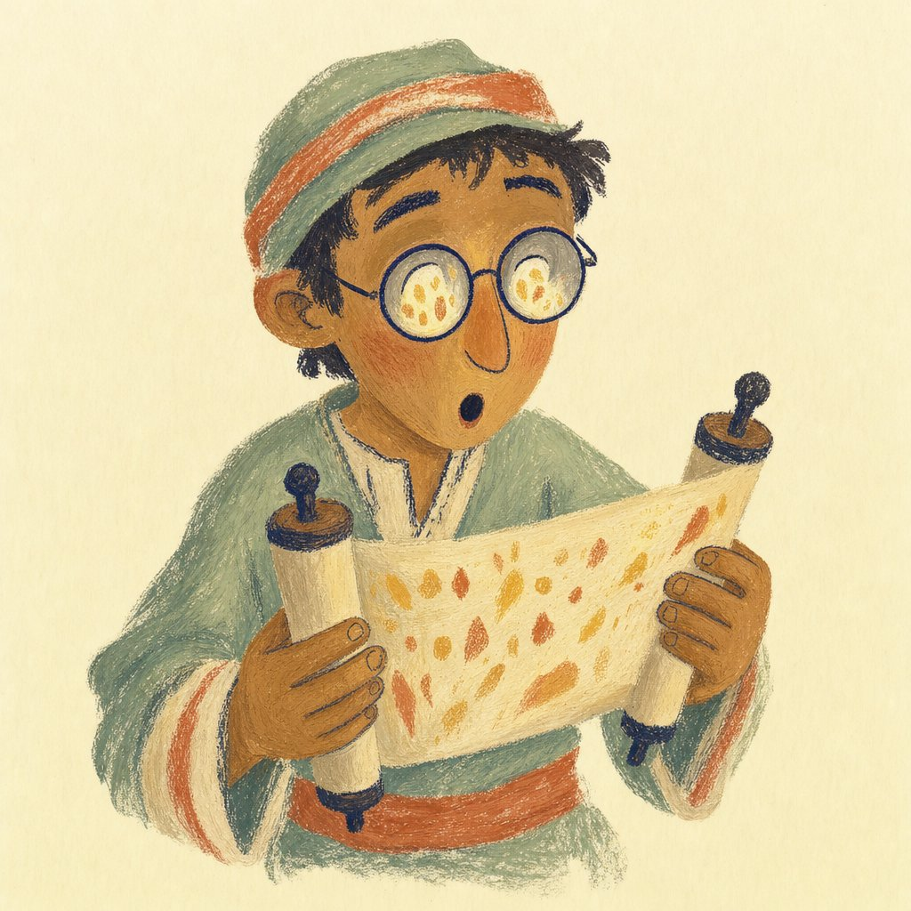
A child of about ten has just put on a pair of round glasses and is holding an open scroll. Their face is startled with delight, mouth in an 'O'. Through the lenses the scroll looks bright with tiny warm shapes, while around the edges of the glasses it looks plain and grey. This is a playful callback to Nicodemus' dark sunglasses. The scroll shows no letters, just soft warm marks.
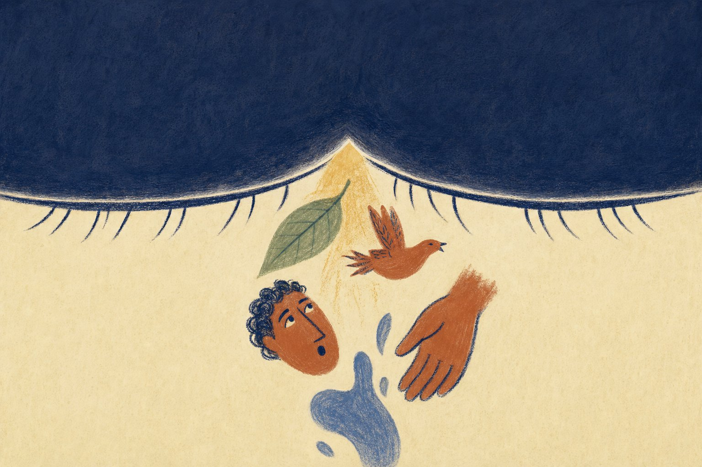
A symbolic image built on one horizontal line across the page, shaped like the curve of a closed eyelid with lashes along it. Above the line is dark indigo. Just at the centre, the line is beginning to part like a sunrise. A crack of light spills out, and with it shapes of the world come tumbling: a leaf, a bird, a face, a sky blue-indigo splash, a mother's hand. Graphic and bold, with plenty of cream.
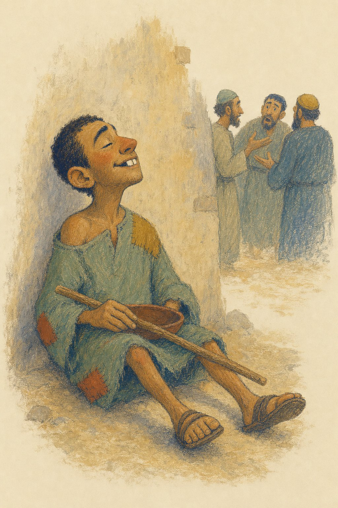
The young beggar sits against a sunny wall, legs stuck out, his too-big patched tunic slipping off one shoulder. He holds his begging bowl and walking stick across his lap. His face is turned up toward the sound of voices, with his cheeky buck-toothed grin and closed eyes. One ear is cocked, plainly overhearing the disciples argue about whose fault he is, and he is unimpressed. He is lively and funny, not pitiful.
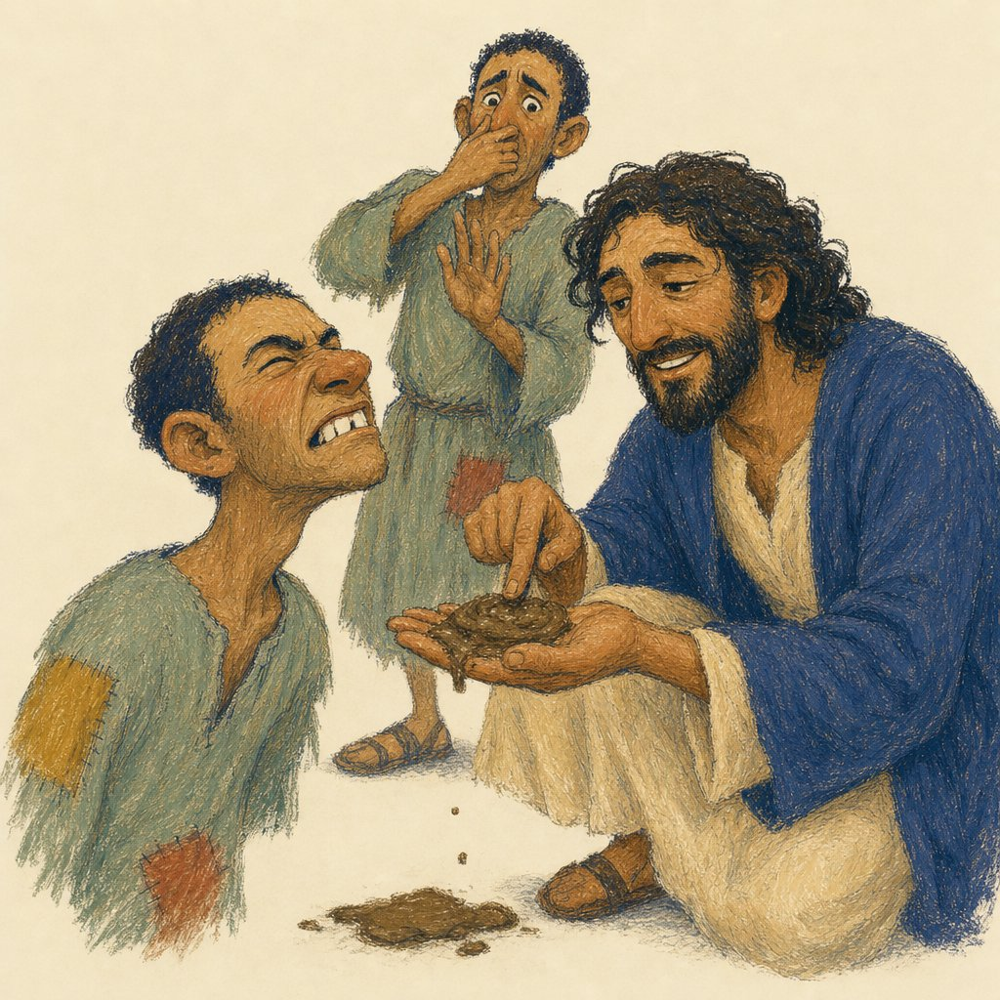
A close comic moment. Jesus crouches and mixes a little blob of mud in His palm with a finger, looking pleased with His odd recipe. The blind man, sensing something cool and squishy coming toward his face, wrinkles his whole face up, nose scrunched and teeth showing. A disciple behind looks thoroughly disgusted. A small puddle of spit-mud sits on the ground.
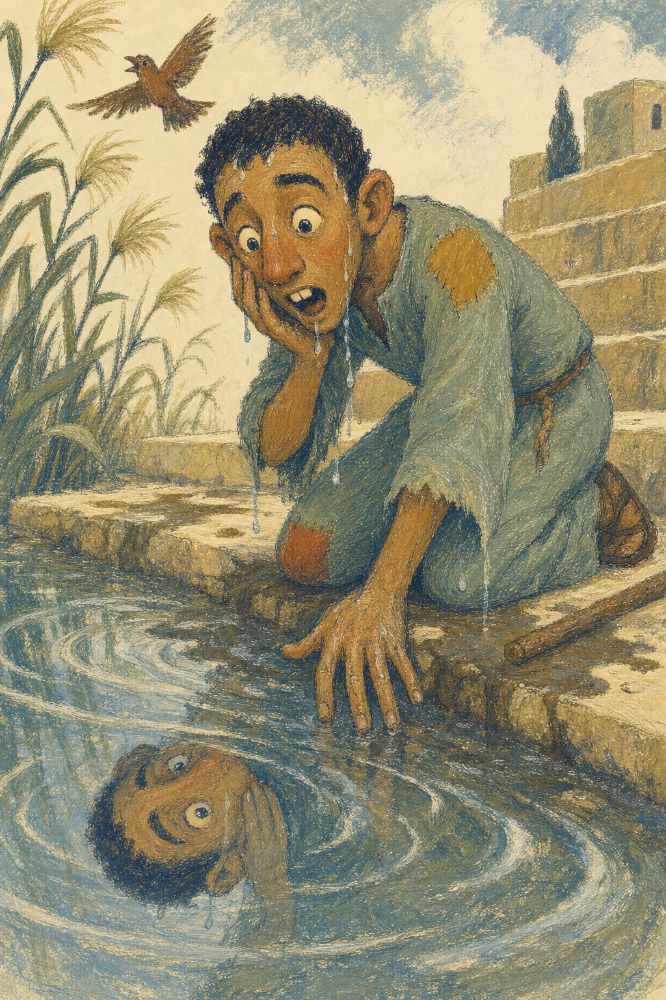
At the edge of the pool of Siloam, the young man kneels with water dripping from his face and muddy water swirling away from his hands. He is staring down into the pool at his own reflection, the first face he has ever seen. His reflection grins back with its buck teeth. His mouth hangs open and his eyes are huge, one hand touching his cheek. Around him the world rushes in all at once: a bird, reeds, ripples, sky. His stick lies forgotten on the steps.
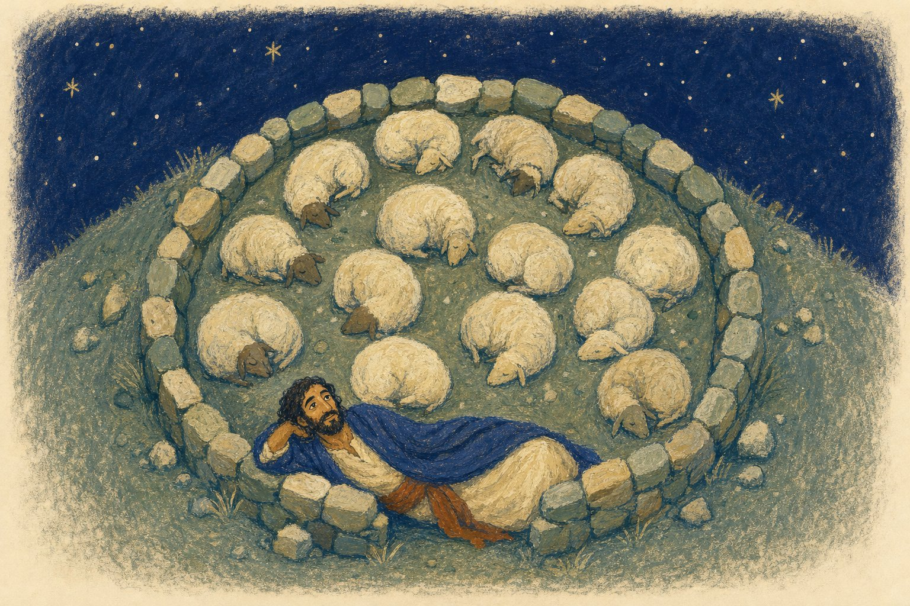
A graphic night composition. A low round stone sheepfold is seen from above as a circle, with sheep inside curled into soft woolly shapes, all asleep. The only gap in the wall is filled by the shepherd himself, lying across the opening with his cloak pulled round him and one arm under his head. He is relaxed but awake, his eyes open, watching the stars. The whole circle feels safe. Outside, the night is empty.
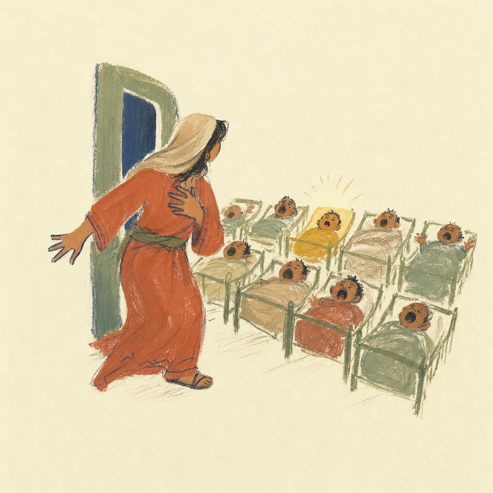
A hospital nursery suggested in a few lines: a row of tiny cots, many babies crying with wide-open mouths. At the doorway a young mother, suggested rather than detailed with her face turned away from us, has spun around instantly, her hand on her heart. Her whole body leans toward one particular cot. A subtle small glow rests over that one baby. The other babies are all different, but her body knows which is hers.
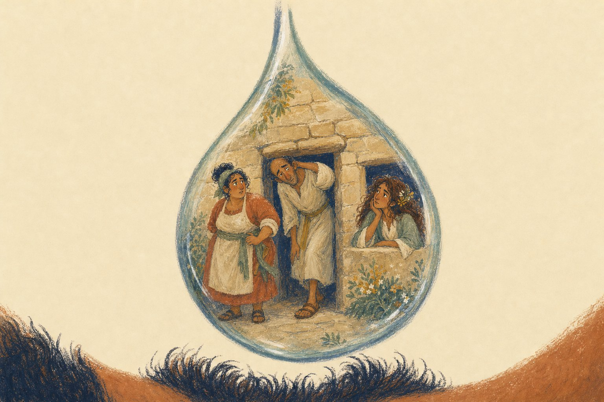
A single large teardrop shape fills the centre of the page, drawn in soft transparent layers. Inside the tear, as if reflected in it, is a little scene of the house in Bethany: Martha at a doorway, Mary in a window, and a tall gangly figure ducking under the lintel. These are the friends Jesus loves. Around the tear is cream space. At the very bottom is the curve of a cheek and a few strands of dark beard.
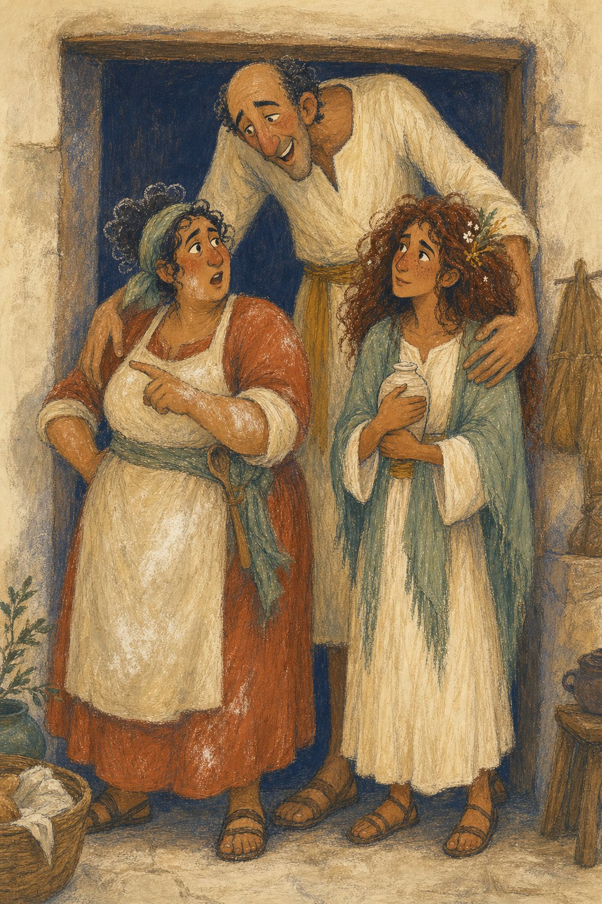
A group portrait in a doorway. Martha is plump and floury, with sleeves rolled and a wooden spoon in her belt. She is mid-sentence, organising, pointing toward the kitchen. Mary is slender and dreamy, with a cloud of reddish hair and flowers, gazing at something lovely out of frame. Lazarus is extremely tall and has to duck under the door frame. He is balding, knobbly-kneed and grinning shyly, one hand on each sister's shoulder. Three very different people who clearly love each other.
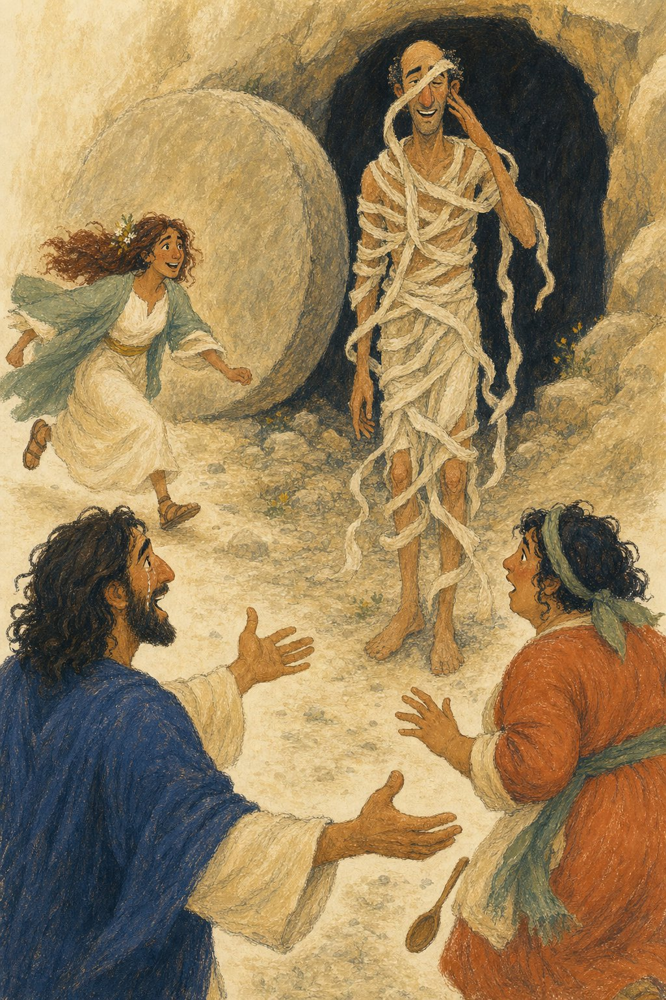
The dark mouth of a cave tomb with the stone rolled aside. In the opening stands Lazarus, impossibly tall and gangly, still bound in linen strips that have come loose and trail around his knobbly knees. One strip has slipped over one eye, and he blinks into the daylight with his shy lopsided grin. In the foreground, seen partly from behind, Jesus has His arms half-raised, His face wet with tears and breaking into a laugh. Martha has dropped her spoon and Mary is already running.
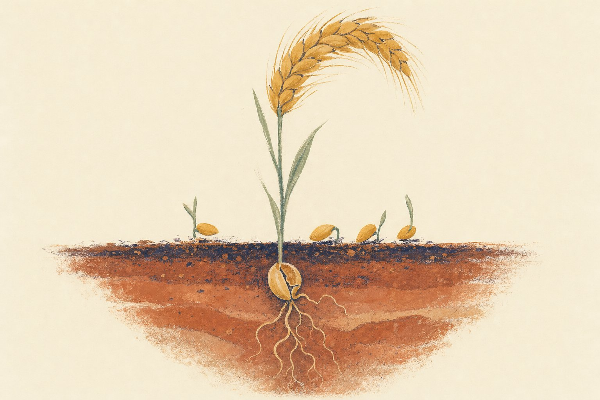
A cross-section of earth split across the page. Below the ground, in layered terracotta soil, a single seed lies cracked open, with a few simple roots curling gently downward. Above the ground, rising from that one seed, a tall wheat stalk bursts into a big, full, heavy head of plump golden grain, bending with abundance; a few grains have fallen nearby and are already sprouting tiny green shoots. No faces on the grains. Hopeful and generous, lots of space above and below, with a strong vertical line.
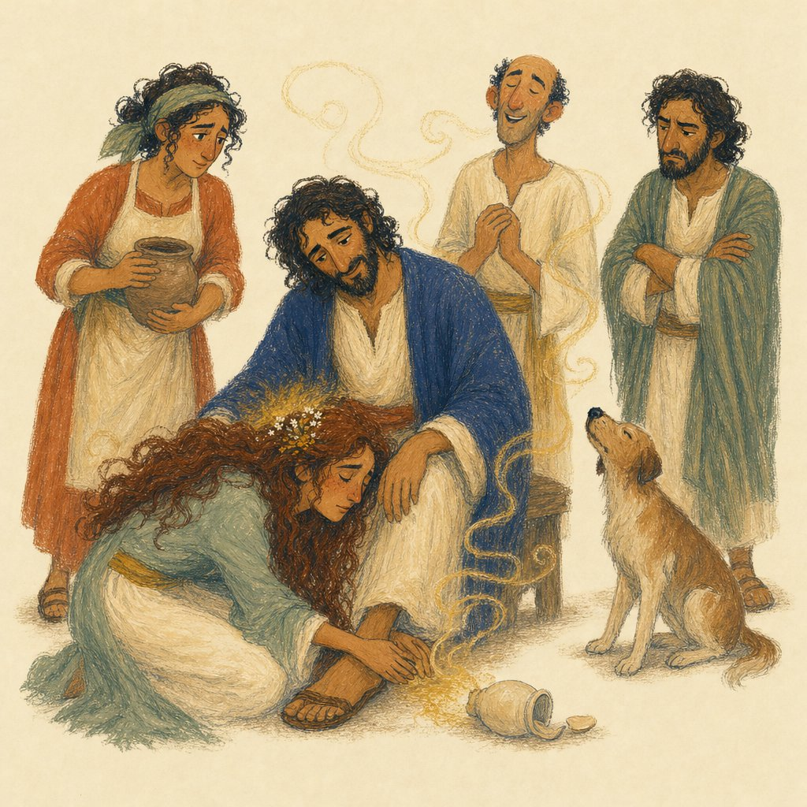
Mary of Bethany kneels with her loose reddish hair falling forward over Jesus' feet and the broken alabaster jar beside her. From the jar, scent rises in curling, loopy lines that drift across the room. Lazarus closes his eyes and smiles, Martha pauses with a pot in her hands, and a dog lifts its nose. In the corner one disciple frowns with arms crossed, the only one not enjoying it. Jesus looks down at Mary with deep tenderness, and a small glow rests between them.
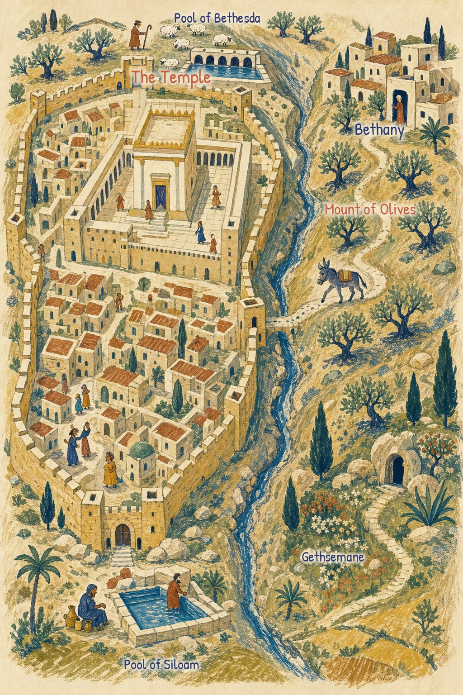
A playful bird's-eye pictorial map of Jerusalem and its surroundings with no labels or writing. It shows the city walls and the big temple with its courts, a small pool with five arches (Bethesda) near a sheep gate, and another pool to the south (Siloam). East across a little valley is the Mount of Olives with olive trees, and beyond the hill is the village of Bethany with a tiny tall figure in a doorway. A donkey trots down the slope toward the city gate. A quiet garden with a cave lies just outside the wall. It should be charming and readable, like a treasure map.
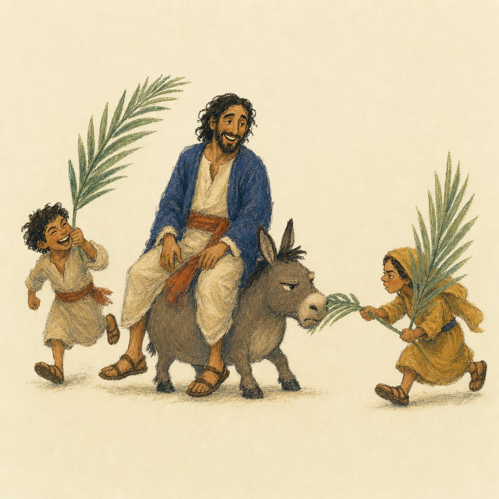
Jesus rides a very small, round, determined donkey. His feet nearly touch the ground and His knees stick out, and He is grinning at the absurdity. Children run alongside waving palm branches bigger than themselves. One branch tickles the donkey's nose, and it looks mightily unimpressed. No grand horse, no crown, just joy and humility.
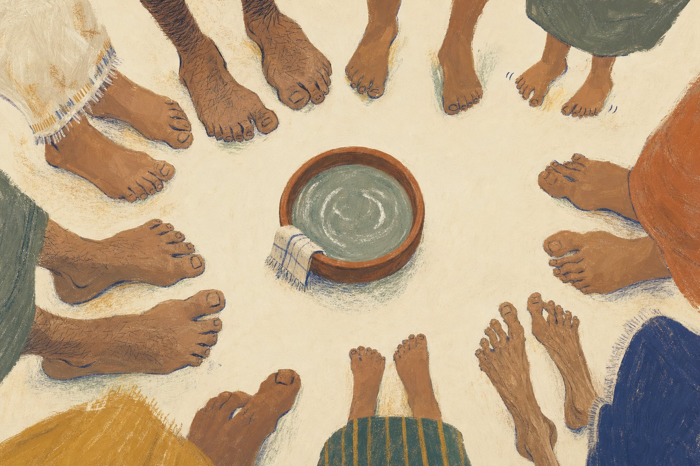
A top-down graphic composition. In a circle around the page edge, many pairs of bare feet stick in from all sides, all very different: huge and hairy, bony, small, with crooked toes, one pair fidgeting, all dusty from the road. In the centre sits a single round clay bowl of clear water with a folded towel draped over its rim. Simple, rhythmic and patterned, with lots of cream.
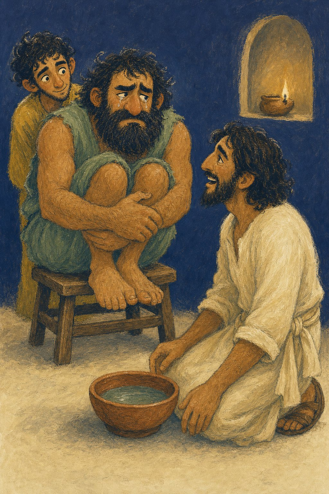
A comic, tender moment. Big burly Peter sits on a low stool hugging his knees to his chest, both bare feet lifted high off the floor, his arms wrapped tight around his shins, bushy beard jutting out stubbornly while his eyes look embarrassed and close to tears. Jesus kneels on the floor in front of him with a towel tied around his waist and one clay bowl of water, looking up at Peter with a patient, loving half-laugh. Young John peeks over Peter's shoulder, hiding a grin. Simple background: a hint of a lamp-lit room. Exactly one bowl.
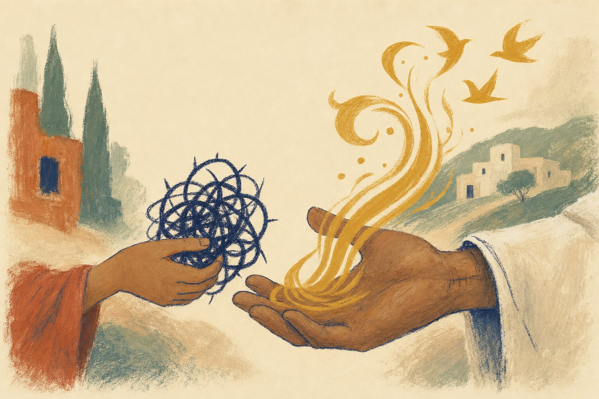
Two hands meet in the centre of the page. One is small and human and is handing over a tangled, thorny knot of dark scribbled crayon lines, the language of 'I'm not good enough'. The other, a strong carpenter's hand with a scar, is taking the knot while offering back a warm, flowing ribbon of mustard shapes that curls up like birdsong. Strong, simple graphic shapes and lots of empty space. No words or letters.
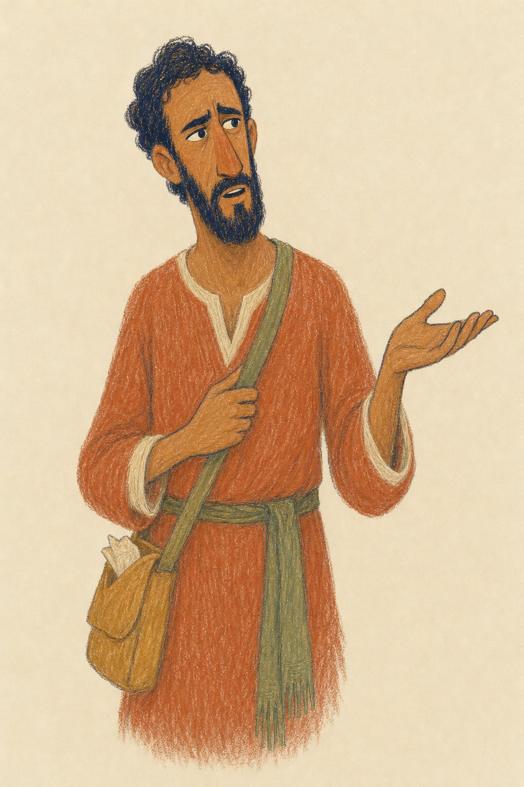
Thomas, very tall and thin with a long face and high forehead, stands with his satchel strap clutched in one hand. His other hand is raised as he asks his honest question. His deep-set eyes are earnest, eyebrows knitted, head slightly forward. He is not grumpy, just someone who needs to understand. A crumpled travel scrap pokes from his satchel. He is set on cream space.
A whimsical, impossible house that grows sideways and upward with more and more rooms, doors and windows added in a cheerful jumble of shapes. There are stairs to nowhere, round windows and a laundry line. Every window has a small lamp lit. At ground level, there is one small child-sized door standing open with a warm glow spilling out and a welcome mat. It is not a palace in the clouds but rooted on the ground.
A strong central vine trunk rises from the bottom of the page. Its branches curl outward in rhythmic spirals across the whole page, bearing grape clusters and leaves. The branches gradually become arms and figures: people of all ages and shapes resting, lounging and hanging upside down in the curves, all part of the same vine. A single line of sap, slightly lighter, runs from the root right through every branch and every person. It is graphic and decorative with abundant white space.
Two little branch-characters side by side. On the left, a branch with a face is straining, red-faced, cheeks puffed and veins popping, trying to squeeze out a single tiny sour grape. On the right, an identical branch lounges back in a curl of the vine with eyes closed and a contented smile, while plump grape clusters grow all over it effortlessly. It is a simple comic diptych without background.
A still lake at dawn in soft early light. Gentle mist rises off the water in long curling wisps and drifts onto the shore, where a small human figure stands looking out over the lake; the curls of mist wrap softly around the figure's shoulders like a warm shawl, comforting and close. The mist is soft and abstract, never a ghost or a human shape. Calm, lots of empty cream space, a few birds low over the water.
A row of quirky musicians: a round-bellied cellist, a lanky violinist leaning dramatically and a tiny old woman on a huge drum. In the front row, a child stands on their seat singing at the top of their voice with eyes closed and arms wide, completely carried away. The musicians' sheet music sprouts swirls of colour that float off the page into the air. Avoid real notation or letters.
A wooden see-saw on a grassy bump, perfectly level in mid-air. On one end sits Jesus with His legs dangling, laughing. On the other end sits a small child, legs dangling the same way. They mirror each other's pose exactly, both with arms up and the same delighted face. Neither end is up or down. A curious goat underneath checks the balance with its head tilted.
A child kneels in the grass holding up a big round magnifying glass with both hands. Outside the lens the world looks ordinary and small. Through the lens, everything is big, clear and warm: Jesus, crouched a little way beyond, appears large inside the glass, his kind face smiling back at the child, lit with a soft golden glow, as if the lens has made God's kindness big enough to see. The child's mouth is open in a delighted 'wow'. Lots of cream space with a few chunky brush circles echoing out from the lens.
A child's hand holds a crumpled, muddy banknote up toward the bright sun. The note is dirty: a tyre track across it, a muddy footprint, a torn corner. But the sunlight shines through it, and in the note's clear oval window a softly glowing watermark appears: the gentle outline of a child's smiling face, clean and shining, untouched by all the mud. The note has only simple decorative swirls and borders: absolutely no numbers, letters, symbols or text of any currency. A few rays of light, lots of empty cream paper around it.
A close, warm view from behind: Jesus fills the left half of the picture, walking up a rocky road at dusk. Tied on his back in a big terracotta carrying-blanket, the way African mothers carry their babies, is a crowd of small people, clearly visible and peeking out over the edge of the blanket: a sleepy child, a granny with a headscarf, a fisherman, a soldier with his helmet off, a curious kid who could be the reader. They look safe and peaceful, some dozing, one waving. The road and dark hills stretch away behind them, simple and soft. A small warm glow where the blanket is knotted at his chest. Gentle, not frightening.
A heavy prison door stands open. A rough, scarred man with wild hair and broken shackles dangling from his wrists stumbles out into daylight, shielding his eyes, utterly bewildered. He looks back over his shoulder, perhaps toward the one who took his place, just off-page. His expression is confusion turning into the beginning of wonder. A sunbeam falls across his path.
A gentle, symbolic image. A crown of thorns lies on bare cream ground, drawn in sparse dark indigo crayon. Through the middle of the thorns, a single small green shoot has pushed up with one mustard flower opening. There is no blood, no figure, no violence. Huge negative space around it so it feels quiet and still, like a pause before a hard chapter.
Seen from low and slightly behind, Mary and young John stand close together at the foot of the cross. Only the bottom of the wooden cross is visible, rising out of the top of the page. John, gangly and young, has his arm wrapped around Mary's shoulders, and she leans her head into him, her hand over her mouth. A small glow sits between them where their hands meet. The sky is wide and heavy. Show grief and love, not suffering.
Seen from the front and from far away, looking up a bare hill: a single wooden cross stands on the hilltop, small against an enormous sky. Jesus is on the cross facing us, arms stretched wide along the crossbeam, head lifted to the sky as he cries out 'It is finished!'. He is drawn very simply, almost as a dark outline or silhouette against the bright light behind him, with no facial detail, no wounds and no blood; a plain cloth around his waist. The sky has gone wild: huge swirling indigo storm clouds are tearing open, and great spirals and rays of mustard-gold and terracotta light burst through the gaps behind the cross, as if all of creation is answering him. The darkness is breaking, not winning. Awe and triumph, not horror; suitable for 8-year-olds.
A dark tunnel. Jesus walks through it carrying a small child on His hip. Along the walls loom scary monster shapes with big teeth and claws, but up close they are clearly flat cardboard cut-outs propped on sticks, a bit like Halloween masks. One has already fallen over. The child peeks at them, then giggles. Up ahead, the tunnel opens into soft daylight. Playful, reassuring, not frightening.
Inside the empty tomb, looking out. On a stone ledge in the foreground lie the long linen wrappings, empty and flat. Beside them, the head cloth sits neatly folded on its own, a quirky, almost tidy detail. Through the round tomb doorway beyond, the first light of dawn spills in across the floor toward the cloths. No figures. Stillness and a sense of something wonderful just happened.
Young John sprints ahead, all legs and elbows, big feet flying and ears practically flapping, glancing back with a cheeky look. Several strides behind, big burly Peter thunders along red-faced and puffing, his beard blowing, one sandal coming off. The dust clouds behind them make a comic trail. Early morning, a few strokes of path.
A garden at dawn. Mary Magdalene, small, with her thick braid and tear-streaked round face, is caught in the instant of turning back. Her mouth is opening in a cry, her eyes flooding with recognition and joy, her hands flying up. Jesus stands close, ordinary, with garden earth on His hands and sleeves pushed up, easily mistaken for the gardener. He is smiling with His whole face, having just spoken her name. A small glow blooms between them. The empty tomb is small in the background.
A close-up of two hands. Thomas's long, careful finger hovers just short of Jesus' open palm, which bears a scar. Above, we see part of Thomas's long face: his eyes welling, eyebrows lifting, his scepticism dissolving into awe. Jesus' face is just visible at the edge, gentle and amused, holding out His hand without any reproach. A small glow rests on the open palm. Intimate, quiet, few lines.
A view from underwater, looking up toward the surface at dawn. The dark hull of a small boat sits at the top of the page, and from its right side a net plunges down, suddenly bursting with fish, so full the mesh bulges. Fish swirl in every direction in a joyful spiral. Light from the dawn breaks through the surface in wobbly shafts. Bold graphic shapes and lots of movement.
Peter, burly and bearded, is caught mid-leap off the side of the boat. His coat is wrapped awkwardly around him, legs pedalling, eyes squeezed shut in total commitment, and a huge splash erupts below. In the boat behind, the other disciples cling to the bulging net, mouths open. Young John points shoreward, shouting. Comic and full of love.
A beach at daybreak. A small fire crackles on the sand with fish and bread cooking on stones, and its glow is the warm centre of the page. Jesus crouches by it, sleeves rolled up, handing a piece of bread to a dripping-wet Peter wrapped in a blanket. Around the fire the others sit close: John leaning in, Thomas with his long knees up, a disciple with his mouth full. Wet footprints run from the sea. Nobody needs to ask who He is.
Jesus and Peter walk side by side along the wet sand at the water's edge, seen from slightly behind. Peter's enormous rough hands gently cradle a small lamb against his chest, and his head is bowed close to Jesus, listening. Jesus' hand rests on his back. On the shining wet sand, their reflections walk with them, lit with soft dawn light. It is quiet and healing, the last image of the book.